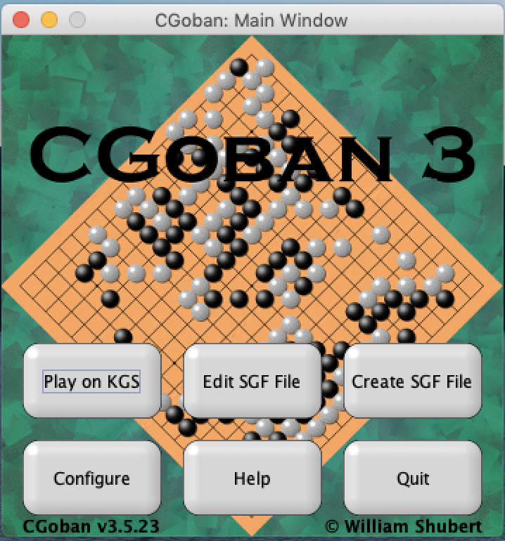
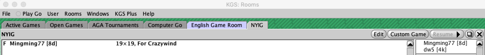

How to Download & Register on KGS
-
Download the KGS Client by going to the KGS Go Server official website and clicking the relevant link under "Download the Client and SGF Editor. Also make sure that your device has a Java distribution installed.
 -
Click Play on KGS. To register, enter your desired username beside Name and press Guest (left image). After the client logs in a popup will appear (right image). If an error occurs, it may be caused by poor internet connection or a server update.
-
On the top menu bar, click User and Register (left image) to open the registration menu (right image). Enter your name and email in the blanks and press OK. Be sure to double check the email address is correct. The entered email will receive a confirmation link with an auto-generated password for the account. Check spam folder.
-
After receiving the confirmation email, close the client and log in again. To change the password, go to User and Edit Personal Information (left image). Enter a new password and press OK. On the same window optional information can be written (right image).
-
To join the NYIG room, start from the top menu bar and click Rooms and Room List. Expand the Clubs dropdown (top left image) to see a list of clubs in alphabetical order. Scroll down to select NYIG and press join (top right image). You are now in the NYIG classroom on KGS. Look for your instructor's demonstration in this room (bottom image)!
How to Set up a Game on KGS
-
Log into your KGS account and switch to the NYIG room. In the upper right corner, find the Custom Game button in the upper right corner of the window. This allows the user to create a new game for a challenger to join.
-
After you press "Custom Game", a small window will show up:
- Select Free in the upper left dropdown (left image).
- In the Rule Set menu, select AGA or the specified rule set of the tournament (middle image).
- In the Time System menu, select Byo-Yomi (right image). A typical time setting is 20 minutes Main Time, 30 seconds Byo-Yomi Time, and 3 Byo-Yomi Periods.
After adjusting these settings, press OK and wait for you opponent.
-
After pressing OK the game will appear on the left side of the window (see picture below). Wait for the opponent to join the game.
 -
When the opponent joins, their name will appear under yours (left image).
If you will play an even game, there should be question marks beside both player's names (left image). If the colors are already determined or handicap is required, click on the question mark to select black or white. Enter the correct Handicap and set the Komi to 0.5 points (right image).
Confirm both player's stones, handicap, and time settings before pressing OK.
-
Once the game creator confirms, a checkmark will appear beside the player's name (see image below). After both players select OK, the game begins.
Remember to greet the opponent and have a great game.